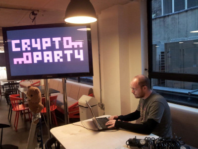
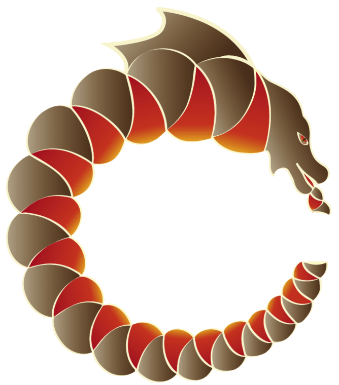
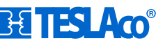
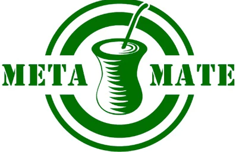
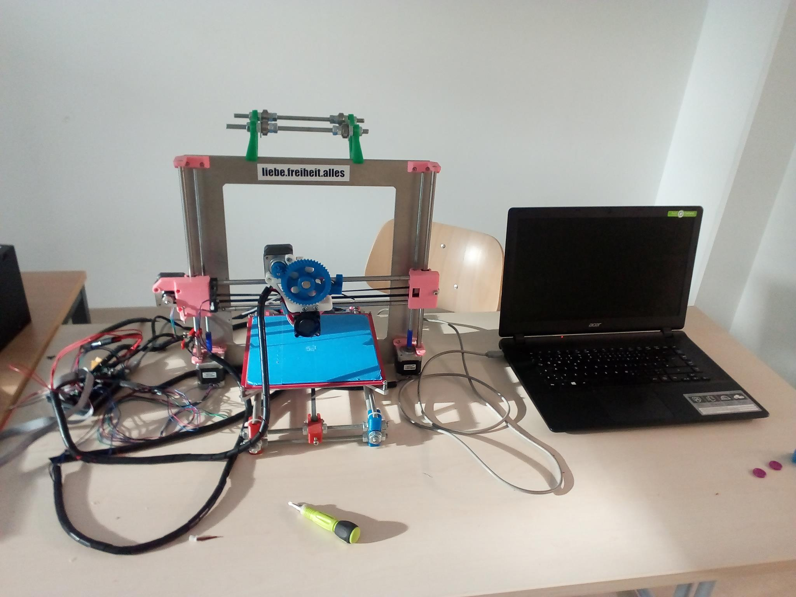

I am an experienced technologist who
establishes technical infrastructure and fosters social patterns
that enable collaboration, participation, and innovation. As a
co-founder of Sukey, I helped create a platform to keep
demonstrators safe, mobile and informed. Additionally, I've been
involved with other initiatives like UCLOccupation, OccupyLSX tech,
CryptopartyLondon, Hurricane Hackers, Open Source Ecology. I have
also had the experience of living in an Eco Village for 5 years. My
background includes working in industry for various companies while
participating in local Hackspace communities around the world.
Embracing hacker culture, I repair and modify my own belongings as
well as assisting others to become more empowered through this
approach. I hold a BEng with honors from Durham University and am a
member of the Institution of Engineering and Technology (IET).
Overall, my work focuses on creating transformative solutions using
open source hardware and software and civic media tools such as 3D
printers or apps designed for direct action while promoting positive
change through global collaborative efforts.
About Me
Services:


IT / Engineering
Consultancy
Freelance IT Consultant
and professionally registered Electronic Engineer, I bring a
unique combination of passion and expertise to the table. My
extensive experience in engineering consultancy, embedded
development, security consulting, web development, and business
development makes me an invaluable asset for businesses seeking
to optimize their digital presence while ensuring reliable
systems integration. This is what "full-stack" looks like.

Security Engineering and
Cybersecurity Consulting
In the age where most
devices have an IP address, security engineering in hardware
design and product development is more critical than ever. It is
important therefore to ensure robustness from the ground up. In
today's interconnected world, safeguarding hardware design and
product development is crucial to maintaining integrity across
all aspects of your business. With my expertise in security
engineering, I can help you create secure products that protect
sensitive information while adhering to industry standards.
Having secure hardware and systems is only a part of the puzzle,
those systems also exist and are used in the world, by real
people and on the public internet. Together we can create
personalized security strategies, reliable network or hardware
designs or custom-made employee training programs that reinforce
your business against cyberattacks. Don't leave the safety of
your digital domain to chance – let's collaborate, tell me about
the needs of your organisation and I will provide exceptional
service to bring you peace of mind and guide you towards a
secure future!
Green Engineering and
Sustainability Consulting
Let's put aside the empty
gestures of green-washing and superficial corporate social
responsibility, leaving them to decompose with the rest of the
💩 on the compost heap. With my love of nature combined with my
engineering expertise, I express my preference for resilience
and sustainability in both system design and also in my personal
life, I can confidently guide businesses and individuals
genuinely committed to enhancing their resilience and
sustainable practice with integrity.
Recent Clients:

Dragon Dreaming Intl
IT and Web consulting for
the Dragon Dreamining project's international website and to
support the working group.

TeslaCo

MetaMate
Projects:


#Animachine
Participative digital
fabrication for endangered species conservation. Twitter
actuated 3D printing in a custom display case installed in a
shopping centre in central Berlin in order to engage supporters
both physically and digitally to raise money to support Cat-Ba
Langur conservation and protection.
Electronic Medical Records
Designed, tested and built
solar-powered HF radio-synchronised electronic medical records
system and communication network deployed in 'extremely remote'
health clinics and hospitals around Lake Tanganyika.

Open Source Ecology
Designing open source
hardware and machines, DIY industrial and agricultural
processes.

Reprap
Open Source 3D printing.
Multiple builds and community contributions to the popular
RepRap project (REplicating RAPid prototyper).
Building Banter
Improving energy
efficiency through ‘conversing’ with buildings and users in an
engaging manner.


Actions:


EcoVillage
Practising voluntary
minimalism, learning about forest ecology, community living,
permaculture, medicinal and edible herbs. Forest bathing.

Cryptoparty London
Grassroots, global
endeavour to introduce the basics of practical cryptography such
as the Tor, PGP, OTR, disk encryption and VPNs to the general
public.
UCLOccupation
Bootstrapped the tech
team at a student occupation (which became a hub of a national
movement) together with other fellow nerds, students and
volunteers.